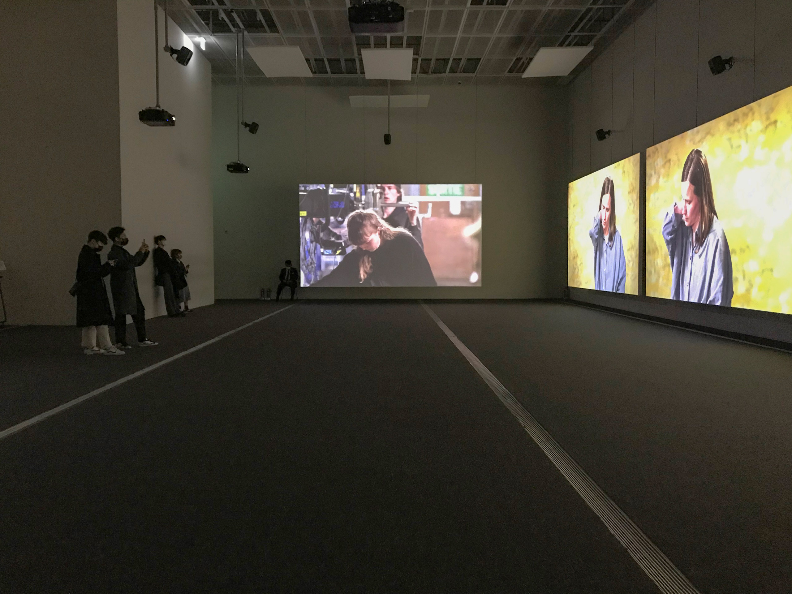

무한히 새로운 오민
<안녕하세요, 손
햇빛이 있는 좋은 아침입니다.
건강히 잘 지내고 계시지요?
저는 어제 국립현대미술관 서울관에서 진행하는 올해의 작가상 전시 중 오민 작가의 전시를 보았습니다. 기대하고 있던 전시여서 아껴보려는 마음에 미루고 미루다 전시가 종료하는 주에야 보게 되었네요. 어제 국현을 가는 길에는 문득 내가 이 전시를 정말 보고 싶었던 걸까 하는 생각마저 들었습니다.
걱정과 달리 전시는 무척 재미있었습니다. 생각보다 전시 공간이 작아서 놀랐지만 그만한 크기의 공간을 5채널 비디오 & 8채널 사운드를 사용해 구성한 선택이 오히려 밀도 있는 경험을 가능하게 했던 듯해요.
밀도 있는 경험. 여기서 ‘밀도’란 물리적인 의미에서의 밀도를 이야기한 것이었습니다.
스크린의 크기나 오디오의 음량에 비해 관객에게 주어진 공간은 좁고 어두웠거든요. 그러한 환경에서 볼 수 있는 것과 들을 수 있는 것은 정해져 있으니 자연스레 몰입이 되더라고요. 영상에 나오는 인물의 표정, 시선, 손동작, 흥얼거림, 구도 등이 시간의 흐름에 따라 미세하게 변하는 것이 투명하게 보였습니다. 고해상도란 역시 좋은 것일까요…
손이 인상 깊게 보았다던 스코어score의 재미도 쏠쏠했습니다.
스코어를 기준으로 15초, 30초, 60초가 지날 때마다 나머지 4채널 비디오에 조금씩 변화가 일어나더라고요. 멍하니 앞을 보던 퍼포머가 갑자기 목덜미를 잡는다거나, 조명의 위치가 변한다거나, 인물 뒤에 있는 벽지가 다른 벽지로 변하는 식으로요.
스코어와 그 스코어를 기준으로 제작된 *퍼포먼스 영상들을 번갈아보다 보니 영상에서 변화가 일어나는 타이밍을 예측할 수 있다는 점에서 즐거웠습니다. 실제 세상에서는 당장 내 앞에 있는 사람이 어느 타이밍에 무슨 말을 할지, 어떤 행동을 할지, 파스타를 주문할지, 돼지국밥을 주문할지 한 치 앞도 알 수 없으니까요.

열심히 고개를 돌려 가며 5채널의 비디오를 모두 봐본 뒤 저에게는 한 가지 질문이 남았습니다.
영상 자체에 담겨있는 정황이나 사건은 이렇게 별것 없는데, 어떻게 이만한 긴장감이 생기는 것일까? 이 작업에서 긴장을 발생시키는 요소는 무엇이지? 3채널 비디오 간의 차이? 백인 여성 퍼포머의 얼굴? 퍼포머의 치밀한 퍼포먼스? 혹은 연기? 연주? 카메라 무빙? 초점 변화? 배경 전환? 새로운 퍼포머의 등장?
다 맞겠죠. 위에 나열한 요소들은 모두 작업의 긴장감을 일으키는 데에 기여합니다. 안 그랬다면 관객들 대부분이 15분이라는 듀레이션을 견디지 못했을 거예요. 하지만 저는 왜인지 이 긴장감의 원인을 뭉뚱그려 ‘시간'이라고 부르고 싶어졌습니다.
그 이유는… 저도 모르겠어요.
작가가 ‘영상'이라는 용어를 이미지에 너무 치중되어 있다는 이유로 자신의 작업을 ‘시간 기반 설치'라고 부른다는 점과 사람의 얼굴을 오랜 시간을 들여 보는 일이 생각보다 흔치 않다는 점에서 그런 방향으로 생각을 하게된 듯해요. 긴장이라는 것의 조건/마중물이 곧 시간인 듯하기도 하고요.
이 이후는… 저도 잘 모르겠어요.
전시 <토마> 설치 전경, 출처: 토탈미술관어제 전해 들었는데 상은 최찬숙 작가가 받았다고 하더라고요.
<올해의 작가상 2021>이 열렸던 작년 10월, 토탈미술관에서 오민 작가가 박수지 큐레이터와 공동 기획한 전시 <토마>가 열렸던 것으로 기억하는데요. 이 전시까지 포함해서 심사했다면 수상 결과가 달라졌을지 궁금해집니다. 오민 작가에게는 수상 여부가 크게 중요하지 않았던 걸까요?
다음에는 오민 작가의 책을 가지고 같이 이야기 나누어보면 좋겠다는 생각이 드네요.
오늘의 메일은 여기까지입니다.
그럼 곧 보아요.
감사합니다.
재훈 드림